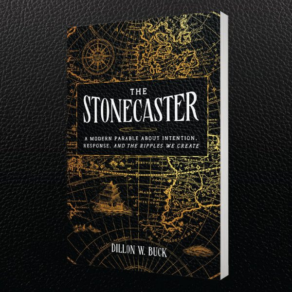
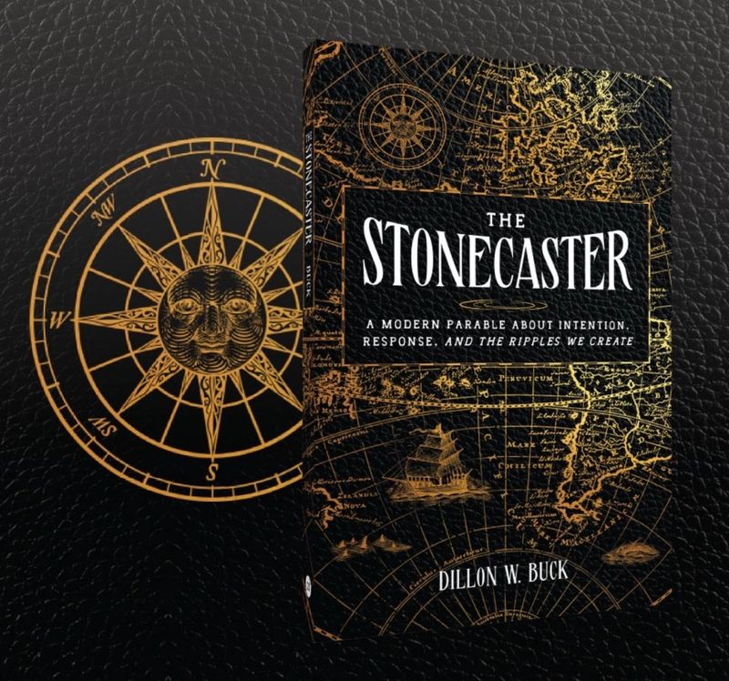

A modern parable
The
Stonecaster
Clarity creates freedom.
A modern parable about intention, response, and the ripples we create.
Coming June 16, 2026

About the book
The Story
James is stuck. He feels misunderstood and mistreated, captive to patterns he cannot escape. Every setback feels personal. Every day is beyond his control — until he encounters a mysterious mentor.
Through a series of subtle lessons and quiet revelations divulged in his dreams, James realizes how his thoughts, assumptions, and emotional reactions have shaped his experiences all along. He begins to unroot deep-seated beliefs and release the weight of perceived injustice to expose an invaluable truth: accountability creates peace.
Dillon W. Buck invites readers to join James on his journey and look inward, recognize themselves, and reconsider the narratives that quietly govern their lives. This contemporary parable illustrates how to focus on what counts and stop tying self-worth to achievement.
Reflective, transformative, and a powerful examination of breaking free from destructive patterns, The Stonecaster is the story of learning to replace the pursuit of perception with the discovery of true fulfillment.

Early readers
Praise
A beautifully written, emotionally intelligent modern parable that blends allegory, faith, and leadership wisdom into a single, cinematic narrative.
This book met me exactly where I was — and then quietly invited me to see what's possible. Through a simple yet meaningful story, Dillon Buck captures the inner tension we all experience between who we are and who we sense we're meant to become.
This terrific book unfolds as a gripping story that hooks you from the very first page, carrying you on an exciting journey of personal growth and discovery. By the end, it leaves you inspired and empowered.
Told as a slightly mystical fable, this enjoyable and easy read follows one person's journey through self-doubt and growth. It's a powerful reminder that staying in the game, even when things are tough, beats waiting until everything feels perfect.
Available June 16, 2026
Pre-Order Now
Published by Houndstooth Press. Available in hardcover.
Retailer links will be live as pre-order pages become available.